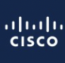
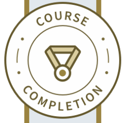
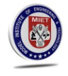

Sakshi Bhat's Portfolio
About Me
I am a quick learner with strong character and friendly behavior, I believe in constructive learning at the same time ensuring personal and professional growth.
Education
- Model Institute of Engineering and Technology (Batch 2018)
Work Experience
- Cisco TAC Collaboration Engineer
Altran · Full-time
Sep 2018 - Jan 2021 · 2 yrs 5 mos
Gurgaon, Haryana, India
- Learned basic troubleshooting skills (i.e., How to probe a customer and gather information), Recreate the scenarios in the lab from basic call flow to complex call flow.
- Gathered the basic knowledge of the protocol like SIP, MGCP, H323, Configuring CME, CUBE, Voice Gateway’s as per the customer requirement, SIP Trunks on the CUCM, SIP-UA configuration towards the provider side.
- Health check of the Controller and how to remove the slip seconds, error code and line code violation on the controller, PRI basic troubleshooting, BRI basic troubleshooting, T1 CAS troubleshooting, and basic FAX troubleshooting.
- I am working for the Multi-Service Team to provide end support to global customers. I am supporting global customers here providing them resolutions in the break and fix environments.
- My KRA’s also includes fault isolations, configuration assistance as well as creating RMA’s if in case of any hardware failures.
- My expertise lies in the following keywords: CME, Protocols such as SIP, H323, MGCP, SCCP, TDM technologies such as PRI, and BRI. Voice Gateways on ISR G2’s routers as well as ISR4k’s routers, Cisco CUBE, and CUE.
- Cisco TAC WebEx Contact Center Engineer
HCL Technologies · Full-time
Jan 2021 - Jun 2022 · 1 yr 6 mos
Bengaluru, Karnataka, India
- I am working as a Cisco TAC Engineer for the WebEx Contact Center Team to provide end support to global customers.
- My KRA’s includes providing Break and Fix assistance to the customers for their contact center environment. I work on doing statistical analysis along with generating reports to review the performance of customer’s environments.
- I closely work with the Business Unit to improve the product quality by identifying new bugs and work with them to improve the documentation and fixes for the same to enhance product reliability.
- Responsible for assistance with new implementations and testing.
- Managing activities related to the Contact Center on the datacenters.
- PSE 2 Engineer
Twilio · Full-time
Apr 2022 - Jan 2023 · 10 mos
Bengaluru, Karnataka, India
-  Consulting Engineer
Cisco · Full-time
Jan 2023 - Present · 1 yr 1 mo
Bengaluru, Karnataka, India · On-site
Skills
- Web Development
- Networking
- Session Initiation Protocol (SIP)
- Cisco Call Manager
- H323 call routing
- Media Gateway Control Protocol (MGCP)
- Application Programming Interfaces
- REST APIs
- SQL, Voice over IP (VoIP), Cisco VoIP, Troubleshooting, Unified Communications, Contact Center Technology
Certifications
- 
Python Quick Start
LinkedIn Learning ⋅ Course Certificate
Issued May 2021
-
Programming Foundations: APIs and Web Services
LinkedIn Learning ⋅ Course Certificate
Issued Jul 2021
-
Kubernetes: Monitoring with Prometheus
LinkedIn Learning ⋅ Course Certificate
Issued Aug 2021
Cources
- Initiating and planning projects
83%
 Associated with Model Institute of Engineering and Technology
- National programming aptitude test
Score: 487 · Aug 2017
Associated with Model Institute of Engineering and Technology
Others
© Sakshi Bhat. All rights reserved.